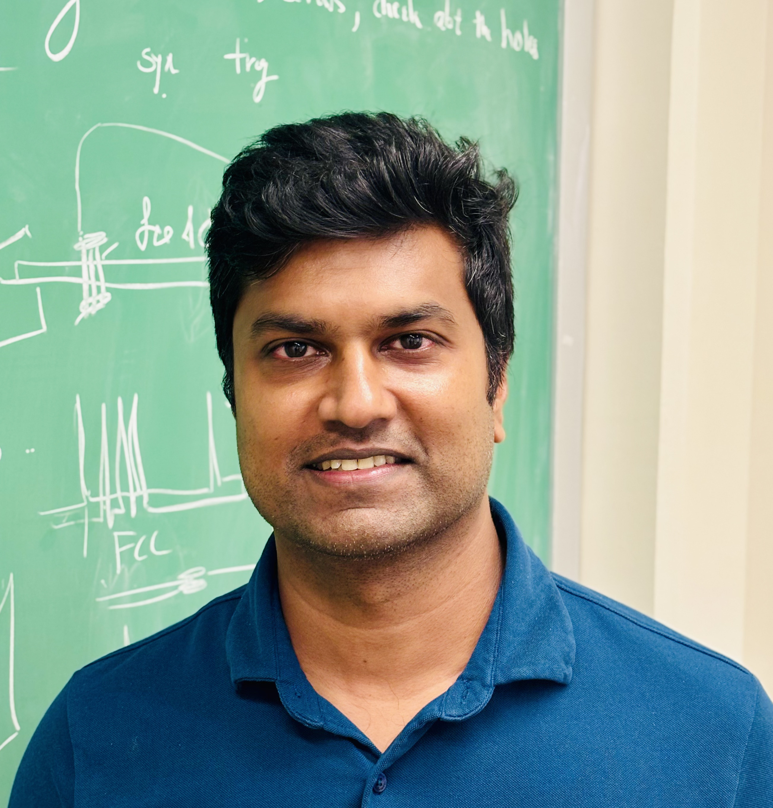

Ranjan Dharmapalan
Postdoctoral Fellow |
 |
This page began, hastily, during an academic job hunt some years ago (pandemic-era hair and all). It can now evolve into a place to write whatever I like, for the three people who will ever read it.
After too long away, I'm getting back to the things I love outside physics: tennis, hiking, and swimming. I used to play table tennis competitively and am always looking for a good game.
In my campaign to spend evenings away from the phone, I am rediscovering the long-lost pleasure of reading. Watch this space for some honest book reviews!
Still a competitive NYT Mini crossword player 😝 (although my times have slipped). Lately I've been playing a lot of Crossplay, another NYT game akin to Scrabble. I enjoy biking to work and hope to circumnavigate the island someday.